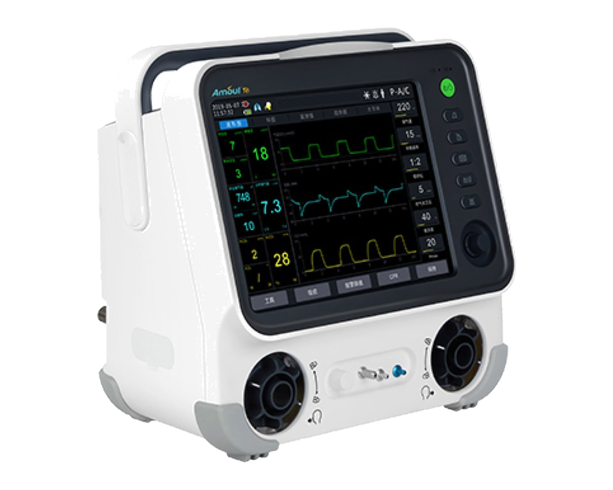
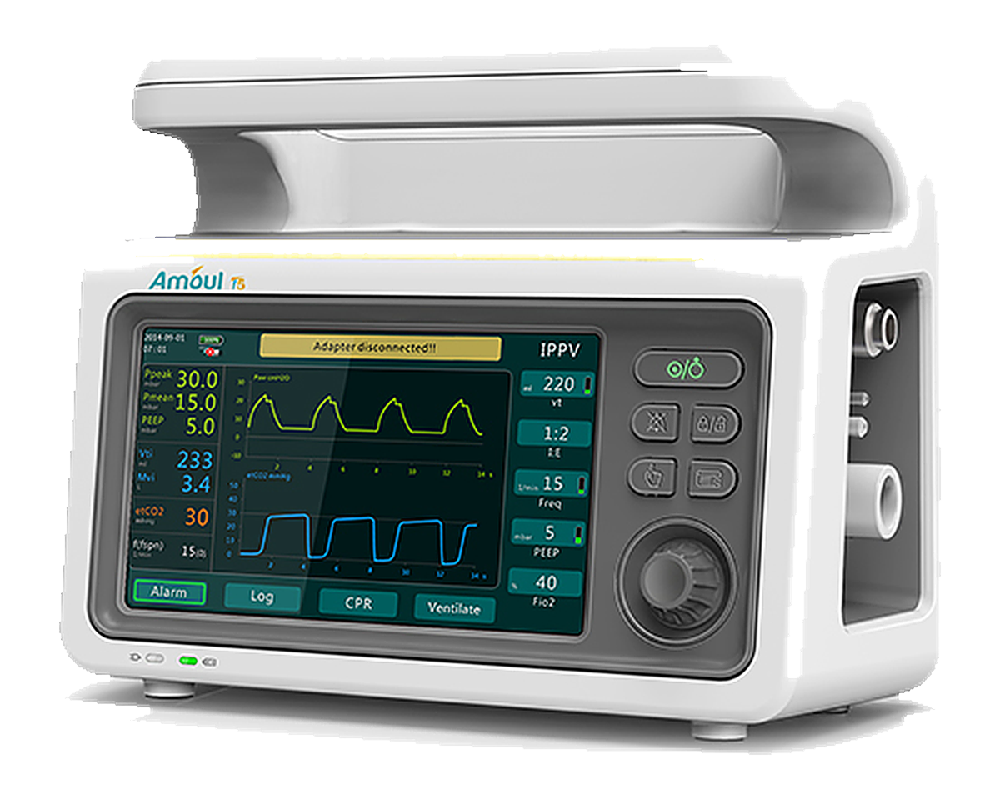
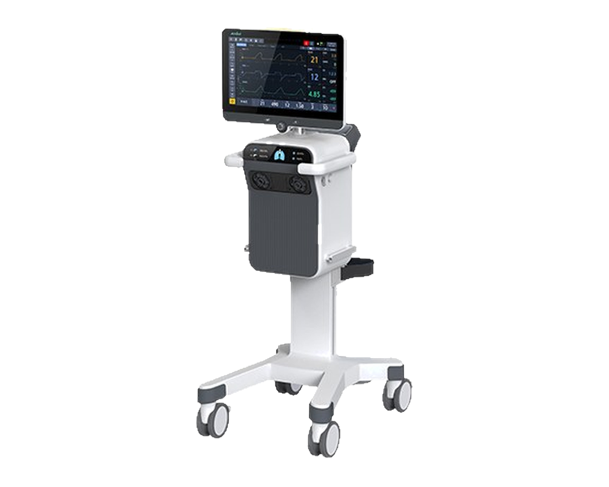
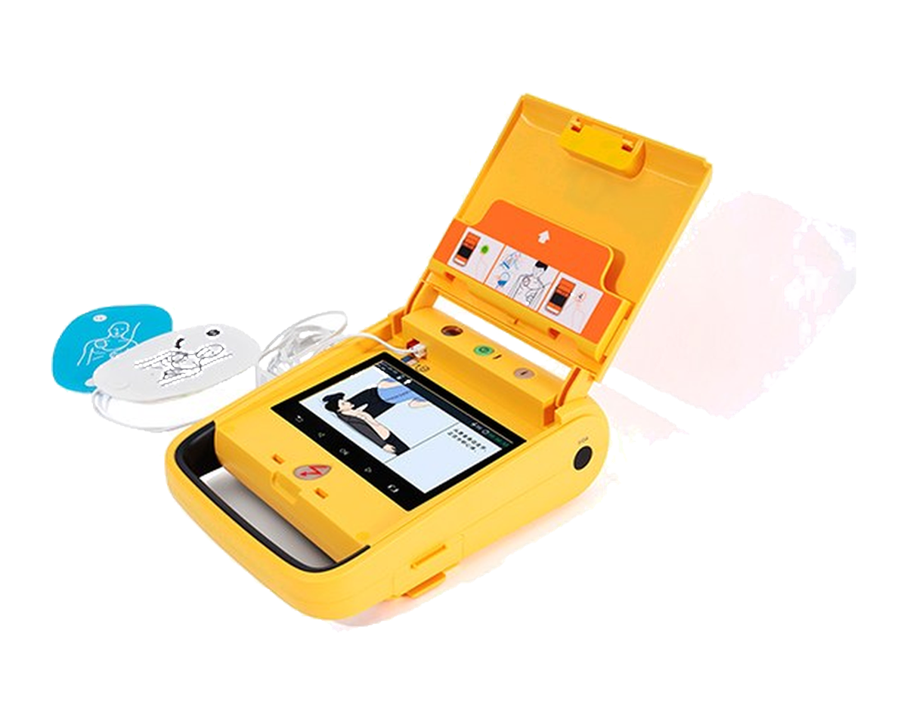
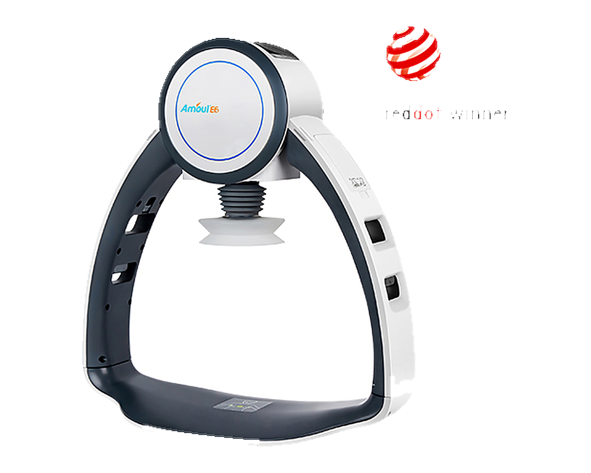
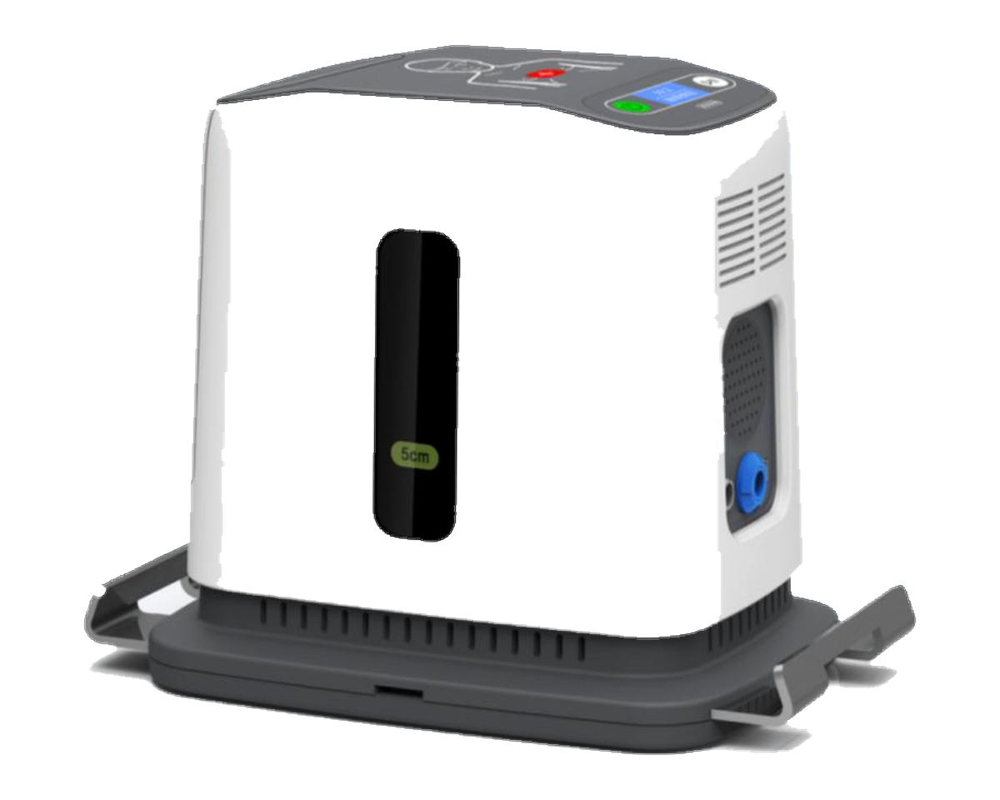

Des solutions totales pour les premiers secours & le support vital
La Maison Africaine du Médecin présente à Monsieur le Ministre de l'Intérieur l'écosystème complet d'Amoul : réanimation cardio-pulmonaire, ventilation et défibrillation — pensé pour les services de secours, la protection civile et les unités d'urgence.

Amoul — expert mondial des urgences vitales depuis 2001
Depuis 2001, Ambulanc (Shenzhen) Tech Co., Ltd. — marque Amoul® — innove et fabrique des solutions totales de support vital et une gamme d'appareils de soins critiques : thérapie respiratoire, RCP, défibrillation. Le Groupe est aujourd'hui une référence mondiale du secours d'urgence.
Une innovation continue, jalonnée de premières mondiales
Primé, breveté, certifié mondialement
Red Dot · Good Design
Red Dot Design Award, Red Star Design Award, Contemporary Good Design. Étoile créative & innovation produit.
800+ brevets
Plus de 130 brevets innovants nationaux & internationaux (PCT). Centre de R&D « Urgence & Support vital ».
CE · FDA · TGA · SFDA
Classes II & III NMPA, marquage EU CE, US FDA, Canada MDL, Australie TGA, Arabie Saoudite SFDA.
Pourquoi Amoul, porté par La Maison Africaine du Médecin
Une réponse intégrée pour équiper vos unités d'intervention : un seul fournisseur, des appareils certifiés, des formations et un service après-vente assurés localement.
Inter-opérabilité
Ventilateurs, RCP et défibrillateurs communiquent entre eux (RCP synchronisée, mode CPR intégré).
Terrain & mobilité
Appareils légers, batteries longue durée, résistants aux chocs/pluie/poussière — pensés pour l'ambulance et le terrain.
Fiabilité certifiée
CE, FDA et normes ambulances EN 1789 · aérien RTCA/DO-160G. Conformité aux guidelines AHA / ERC.
Accompagnement local
Installation, formation des équipes, maintenance et pièces par La Maison Africaine du Médecin.
Un écosystème d'urgence de la route aux soins intensifs
RCP automatique
E6 · E8 · E3 — compressions de qualité constante.
Ventilation
T5 · T6 · VK600 · 6000 — transport & soins intensifs.
Défibrillation
i3 · i5 · i6 · i7/i9 — DAE et moniteurs.
Voies aériennes
Laryngoscope, bronchoscope, aspiration, P30.
Formation
Mannequins Amoul-Man, entraîneurs DAE (simulation).
Solutions
Sécurité publique, urgence, hôpital, néonatal, soins critiques.
Amoul propose une solution globale de soins d'urgence : dispositif d'urgence + information d'urgence + équipement de formation — pour un continuum complet de la prise en charge.
Ventilateurs — T5 · T6 · VK600

Ventilateur pneumatique compact, écran tactile 7", 9 modes, IPX4, 3,4 kg, EN 1789.
Turbine sans air comprimé, 2 mL jusqu'à l'adulte, invasif & non invasif, mode CPR intégré.

Double écran, drive pneumatique + turbine, néonatal 2 mL, invasif · NIV · HFNC.
→ Slide suivante : démonstration interactive des courbes respiratoires.
Simulateur respiratoire — T5 · T6 · VK600
Modifiez les réglages : les courbes Paw / Débit / Volume se recalculent instantanément.
Modèle pédagogique simplifié — ne se substitue pas à un dispositif médical ni à une formation certifiée.
T6 — transport & soins intensifs

VK600 — ventilateur ICU intelligent

DAE Amoul i5 — sauver sur le terrain

Simulateur DAE — Amoul i5
Suivez les étapes : électrodes → analyse → charge → choc → RCP.
Chaîne de survie : alerte → RCP précoce → défibrillation rapide → soins avancés.
Modèle pédagogique simplifié — ne se substitue pas à un dispositif médical ni à une formation certifiée.
RCP E6 · E8 — des compressions jamais fatiguées


Simulateur RCP — guide E6 / automatique E8
Cliquez / maintenez ici — ou touchez ESPACE.
Appui bref et net = profondeur correcte.
Mode manuel : cliquez/maintenez ou touchez ESPACE.
Modèle pédagogique simplifié — ne se substitue pas à un dispositif médical ni à une formation certifiée.
SDRA en réanimation — réglage du T6
Patient de 66 kg en SDRA (compliance basse). Visez la protection pulmonaire et une SpO₂ 92–97 %.
Physiologie simplifiée à visée de démonstration — ne remplace pas un réglage clinique validé par un médecin.
Arrêt cardiaque préhospitalier — E6 + i5
Suivez les étapes : confirmation → E6 → analyse → choc → reprise de la RCP.
L’E6 maintient des compressions régulières et infatigables ; l’EtCO₂ reflète leur efficacité (> 20 mmHg = bon massage).
Scénario pédagogique conforme aux principes AHA/ERC — ne remplace pas une formation certifiée ni un dispositif médical.
Un patient s’effondre… et il est sauvé
Victime inconsciente : suivez les étapes pour la sauver avec les produits Amoul.
Scénario pédagogique (principes AHA/ERC) — ne remplace pas une formation certifiée ni un dispositif médical.
Voies aériennes — voir, aspirer, ventiler
P30
Système de thérapie par gilet HFCWO (percussion thoracique haute fréquence).
ASU-I
Aspirateur électrique de sécrétions.
AVL-I / II
Laryngoscope vidéo portable.
AVL 28/38/52
Bronchoscope vidéo souple.
Une chaîne complète d'intubation et d'entretien des voies aériennes, complémentaire des ventilateurs et du massage cardiaque pour la prise en charge des arrêts cardio-respiratoires.
Formation au support vital & partenariats scientifiques
Mannequins Amoul-Man & entraîneurs DAE pour la simulation, entraînement à l'arythmie cardiaque, coopération avec la recherche clinique.
Un écosystème d'entraînement (équipement + information + formation) déployé sur toute la chaîne d'urgence.
Présents dans 120+ pays, tous continents
Les appareils Amoul sont installés et opérationnels sur les cinq continents — y compris en Afrique (Égypte, Nigeria, Afrique du Sud, Kenya, Ouganda, Libye, Guinée…) et au Moyen-Orient.
120+ pays, tous les continents — cliquez une région pour afficher les sites clients Amoul.
Quand revient le signe vital


T6 — traitement réussi d'un nourrisson de 5 mois (SMA), Philippines.
E8 — réanimation d'arrêts cardiaques, Hunan, Chine.
i5 — arrêt cardiaque réanimé en Thaïlande.
E6 — secours d'une femme de 88 ans.
Des références vérifiables, pas des slogans
Chaque référence s'appuie sur une preuve (bon de commande, attestation signée ou contact direct). Les coordonnées et attestations complètes sont fournies sur demande, avec l'accord préalable de chaque client.
| CLIENT / INSTITUTION | PAYS | APPAREILS · DOMAINE | TYPE DE PREUVE |
|---|---|---|---|
| The Seventh Affiliated Hospital, Sun Yat-sen University | Chine | Ventilation · RCP | Coopération clinique |
| Peking Union Medical College Hospital | Chine | Ventilation · RCP | Coopération clinique |
| Fu Wai Hospital | Chine | Cardiologie · RCP | Coopération clinique |
| West China Hospital | Chine | Soins critiques | Coopération clinique |
| Shenzhen 120 Emergency Center | Chine | RCP · DAE | Déploiement préhospitalier |
| Pathum Thani Hospital, Bangkok | Thaïlande | T6 · i5 | Installation |
| Apollo Hospital | Inde | Ventilateurs · RCP | Installation |
| Belgium EMS System | Belgique | RCP E6 / E8 | Déploiement EMS |
| Vancouver Surrey Hospital | Canada | Ventilation · RCP | Partenariat |
Références issues des coopérations publiées par Amoul. Coordonnées et attestations signées fournies sur demande, avec l'accord de chaque client.
Certifications & conformité documentées
ISO 9001 · ISO 13485
Systèmes de management qualité certifiés TÜV (conception, fabrication, service).
CE · FDA · MDL · TGA · SFDA
Marquage UE (MDR) et enregistrements US, Canada, Australie, Arabie saoudite, NMPA.
EN 1789 · RTCA/DO-160G
Normes ambulances & aéronautique ; sécurité électrique IEC 60601.
| CERTIFICATION | ORGANISME | PORTÉE | N° / VALIDITÉ |
|---|---|---|---|
| ISO 9001 | TÜV | Management qualité | En vigueur — n° sur demande |
| ISO 13485 | TÜV | Management qualité — DM | En vigueur — n° sur demande |
| Marquage CE (MDR 2017/745) | Organisme notifié UE | Dispositifs IIa / IIb / III | Certificat UE — n° sur demande |
| US FDA | FDA | Établissement & produits | Enregistré |
| Canada MDL | Santé Canada | Licence de dispositif | En vigueur |
| Australie TGA | TGA | Enregistrement (ARTG) | En vigueur |
| Arabie saoudite SFDA | SFDA | Enregistrement | En vigueur |
| NMPA (Chine) | NMPA | Classes II & III | Enregistré |
| RTCA / DO-160G | — | Aéronautique (E6 / E8) | Conformité |
| EN 1789 | — | Ambulances | Conformité |
| IEC 60601 | — | Sécurité électrique | Conformité |
| Enregistrement Tunisie | Ministère de la Santé (DPM) | Homologation du dispositif | À compléter — démarche en cours |
Les copies certifiées et les numéros de certificats en cours de validité sont communiqués sur demande (dossier technique fourni pour l'enregistrement local).
Un service qui dure toute la vie de l'appareil
Support à vie
Assistance technique permanente.
Contrôle 14 jours
Réception & vérification après livraison.
Réponse < 48 h
Instruction à distance en moins de 48 heures.
Installation & formation
Mise en service et formation des équipes incluses.
Salle d'urgence 3D interactive
Équiper les forces de secours,
nous nous occupons du reste
Transmettez-nous la liste de vos besoins — ou simplement la photo d'un appareil à remplacer. Nous revenons vers vous avec une proposition de dotation, un délai et un prix, sans engagement.
La Maison Africaine du Médecin
Amoul® est une marque d'Ambulanc (Shenzhen) Tech. Co., Ltd. Document de présentation — ne constitue pas une offre commerciale.
Comparatif technique de la gamme retenue
| APPAREIL | TYPE | PATIENTS | POINT CLÉ | NORMES |
|---|
Données constructeur Amoul — susceptibles d'évoluer. Fiches techniques détaillées disponibles sur demande.